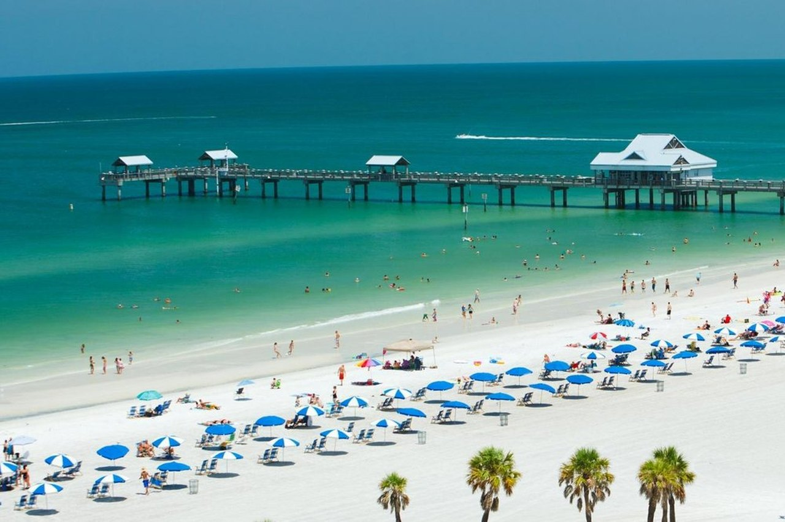
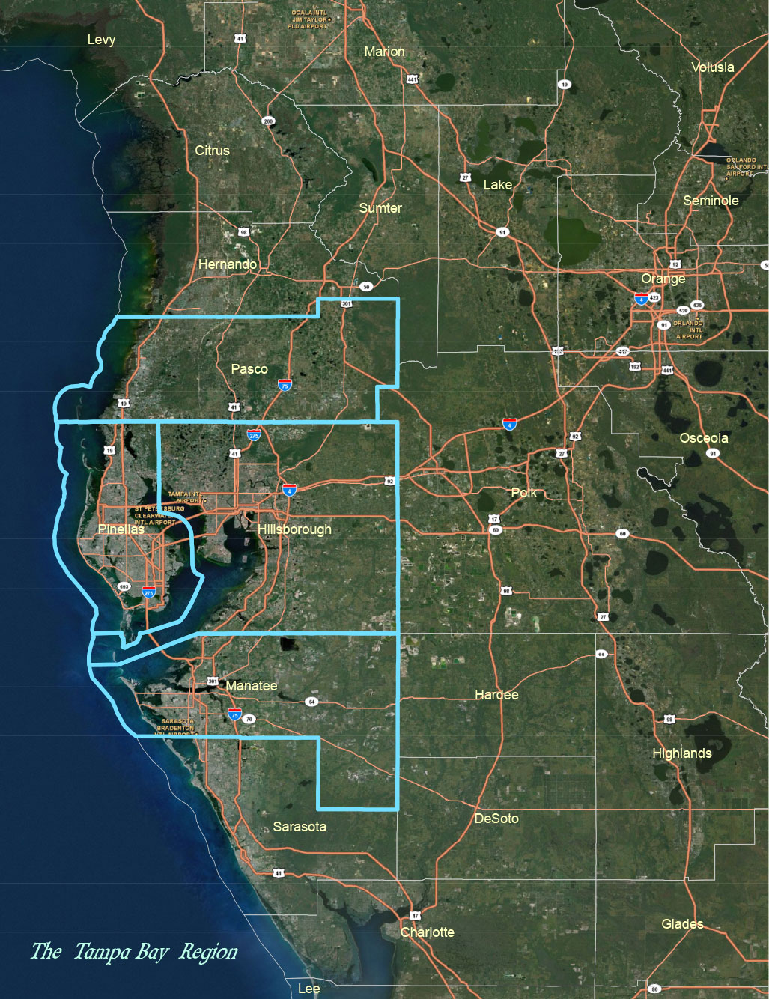
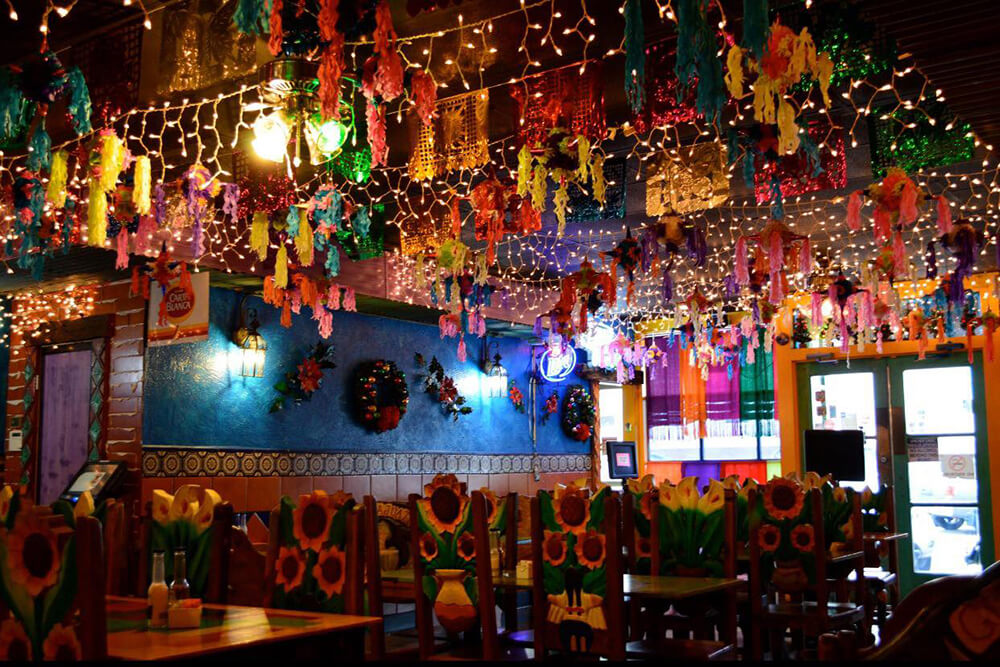
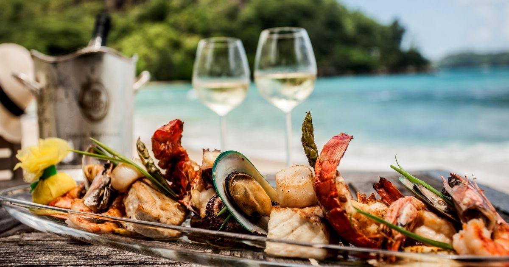

Given the vast amount of data available, based on the popular and profitable internet cyber-star economy elements of this era we mentioned above, we have chosen to focus our research on Florida, a state that offers ideal vacation opportunities with beautiful scenery and a thriving internet cyber-star economy. Apart from Hawaii, Florida is a top choice for seaside vacations due to its stunning beaches and a wide range of activities. Florida’s economy heavily relies on its thriving tourism industry, which generates the highest revenue for the state. The pillar industries of tourist cities are composed of food, transportation, accommodation, and entertainment. Under the background of this era, fast food, takeaway, and restaurants have become extremely important consumption objects in tourist cities.
In such an information age, which means transparent information and open comments, choosing a restaurant is not a difficult task. Just imagining, it’s a lazy Sunday afternoon, and your stomach is rumbling with hunger pangs. You can only grab your phone and within seconds, you’re transported to a digital wonderland of dining options, for example, Yelp Apps. With just a few swipes of your fingertips, you can scour through countless reviews from fellow foodies, drool over sumptuous food photographs, and explore menus that cater to every craving. Gone are the days of endless searches and frustrating phone calls to book a table or place an order. In today’s advanced world of information technology, restaurant hunting is a breeze, whether you prefer dining in or taking out.
But it also inevitably leads us to trust these transparent comments and public ratings too much. For example, there is an emerging profession nowadays, store exploration bloggers. Their job is to go to various restaurants to evaluate food, which seems to be a trend of food critics becoming more professional and populist. However, many operating models nowadays are more similar to where store owners give money to invite bloggers to speak up for their food. With the intervention of money, the purpose of these videos becomes not simple enough, and their reference value will also decrease.
So, in addition to Instagram and Youtube, these highly influential apps, as long as they receive strong recommendations from bloggers, restaurants will also be given the nickname of internet celebrities. The crowd will rush to these restaurants, take photos, taste food, and have long queues in front of them. Our goal is to study more popular recommendations. If a restaurant is on an app like Yelp or Google Map Review, where everyone can give their opinions, With a massive amount of comments and a score close to truth, it seems to have more reference value if it is a recommended choice by 99% of people rather than just the words of the blogger.
More specifically, our project want focus on the Yelp dataset to explore the relationship between human habits, restaurants locations, restaurants business status and scores. By analyzing Yelp data, we can better understand people’s preferences, dietary habits, and what factors contribute to positive dining experiences. Besides, for a restaurant, people’s dietary needs and habits, to a certain extent, affect the business status of the restaurants, the geographical distribution of the restaurants’ location and evaluations. So this is also the focus of our research on this website.
This presents a prime opportunity for us to explore the restaurant operation modes under the internet cyber-star economy, as the data available to us is abundant and encompasses location patterns, to explore the relationship between the location of the restaurant and surrounding facilities as well as the main business of the restaurant itself. With nearly 60 million tourists visiting the Sunshine State each year, the Orlando area and Tampa Bay stands out as a top destinations for its picturesque views, drawing in crowds of visitors from all over the world.
Imagine that in the evening, you are on the beach near Tampa Bay. You are hungry and open YELP to find your favorite restaurant. The seafood bar by the beach will definitely become your first choice. You can taste fresh seafood and fine wine. And if you are in an office area full of tall buildings, convenient fast food and takeaway will become your first choice. Obviously, geographic environment and restaurant types are highly explorable, which is also an important concern for restaurant operators and consumers. So we will discuss this issue in depth.
Yelp Data Overview
The bar-plot above clearly depicts that the states of Pennsylvania (PA), Florida (FL), and Missouri (MO) have the highest number of restaurants in terms of quantity. However, we will narrow our focus on Florida, specifically on the distribution of cities within the state, to investigate how the flourishing internet celebrity economy and the picturesque beach scenery have influenced the restaurant industry in the area. Florida's beaches, especially those in Miami, are highly sought-after destinations for vacationers, making them the second most popular vacation spots after Hawaii. By examining the distribution of restaurants in Florida, we can glean valuable insights into how these factors have impacted the success of restaurants in the state, help develop effective strategies to improve their performance and also help tourists here find the most suitable and high-quality restaurant area.
In the yelp data we collected, one sixth of Yelp’s restaurants are from Florida, providing us with a large amount of analysis data. You can click the bar in the bar chart to view the top 10 cities with the most restaurants in each state on Yelp to understand the city distribution of restaurants. Due to the large number of cities in some states, while some cities only have one or two restaurants in our dataset, we have omitted them here and selected the top ten cities for each state to show.
In the yelp data we collected, one sixth of Yelp’s restaurants are from Florida, providing us with a large amount of analysis data. You can click the bar in the bar chart to view the top 10 cities with the most restaurants in each state on Yelp to understand the city distribution of restaurants. Due to the large number of cities in some states, while some cities only have one or two restaurants in our dataset, we have omitted them here and selected the top ten cities to show.

The table above provides a comprehensive overview of our main data, which we collected from Yelp's official website. We meticulously combed through four databases - business, review, tip, and photo - to compile information on 8177 restaurants in Florida. Our findings revealed that these restaurants have been rated on a scale of 1 to 5, with 0.5 increments between each level. The average score for these establishments was 3.627, and they received an average of 127 comments per restaurant. However, despite the overwhelmingly positive feedback, it is essential to note that approximately 30% of these restaurants have already closed their doors. There are few compliments were received via Yelp, and the average number of compliments per restaurant was 0.1569.
As we know, many Yelp users leave comments after dining at a restaurant, as seen in the example on the right. These comments often include pictures taken by the user at the restaurant, their rating, and other tags given by the user, such as "cool." By analyzing this information, we can provide a detailed overview of the restaurant landscape in Florida.
The restaurant category data on Yelp is characterized by a high degree of repetition. This is due to the open-source nature of the platform, which allows anyone to add a category tag to a given establishment. For instance, a McDonald's restaurant can be classified as fast food, comfort food, dessert, breakfast & brunch, or more, depending on the user's discretion. Such a multitude of categories creates a cluttered visualization with an overwhelming number of elements, providing too many options for individuals who already know what type of food they prefer. Consequently, our team has opted to analyze the data using three distinct classification methods: Special, Region, and Format.
The Special classification pertains to restaurants that cater to specific dietary needs such as gluten-free and vegan cuisine. Region, on the other hand, categorizes food according to its geographic identity, such as Asian and American cuisine. Finally, Format refers to the type of service provided by the establishment, such as sports bars and food trucks.
As shown in the left tree graph, these three classification methods provide a more focused and informative analysis of the restaurant data, avoiding clutter and simplifying the selection process for consumers who know what type of food they desire.
Business Status Anlysis
The current pandemic has caused a significant impact on the restaurant industry, and many restaurants struggle to stay afloat. Despite the challenges, some restaurants manage to thrive and succeed even in these difficult times. But what exactly makes a restaurant successful? This question has puzzled many, and what are the factors that contribute to a restaurant's success?
Location?
For tourists visiting Florida, the following situations should not be unfamiliar.
Choosing a restaurant near a movie theater is a common practice for many moviegoers. It's convenient, saves time, and adds to the overall entertainment experience. The proximity to the theater allows for a quick transition from one activity to another, making it an ideal option for those with limited time. Additionally, going to a restaurant after a movie is a great way to extend the social experience and discuss the film with friends or family over a meal. It's no wonder that restaurants located near movie theaters tend to have higher foot traffic and customer satisfaction.

When visiting the beautiful beaches of Florida, it's not just about soaking up the sun and sand. After a long day of swimming, surfing, and relaxing, hunger sets in and it's time to find a place to eat. But with so many options, how do you choose where to go? Many people opt for the restaurants located near the beach, as they're conveniently located and offer a taste of local cuisine. Additionally, those who have spent the day at the beach may not want to travel too far for a meal.
When you're out shopping at the mall and after a long day of browsing through stores, you start to feel hungry. Do you take the time to research the best restaurant options in the city, or do you simply choose one of the eateries located within the mall? For most people, the convenience of having a restaurant nearby makes it an easy choice. This is why many malls have a variety of dining options to choose from. Not only does it provide a quick and easy solution for hungry shoppers, but it also creates a sense of community and activity within the mall.
Visiting a museum can be an exciting and educational experience, but it can also leave you feeling hungry after hours of exploring. That's why choosing a restaurant nearby can be a convenient option. As you wander through the exhibits, your mind may begin to wander to thoughts of delicious food. Luckily, many museums are located in areas with a variety of dining options, allowing you to easily find a restaurant that suits your taste and budget. From quick bites to upscale dining, there's sure to be something nearby to satisfy your hunger and enhance your museum visit.
Restaurant category?
We recategorize the restaurants according to the tags given by people on Yelp in three ways, and tourists also have different preferences for different types of restaurants.

Food Region
When it comes to traveling in Florida, tourists often have different preferences for dining depending on the food region category. Restaurants can be categorized into four main categories: Asian, American, Latin American, and European. Each category has its unique flavor and style of cooking, making it important for tourists to consider their personal preferences when selecting a restaurant to dine at. From the savory and spicy flavors of Asian cuisine to the hearty and comforting dishes of American cuisine, there is something for everyone in Florida's diverse food scene. Whether you're a fan of traditional Latin American dishes or prefer the elegance of European cuisine, the food region category you choose can greatly affect your dining experience in the Sunshine State.
Meal Format
When traveling in Florida, people have different preferences for different types of dining formats. Whether it's a quick snack or a sit-down meal, the format of the dining experience can greatly influence one's dining choices. According to our analysis, there are seven main dining formats: bars, desserts, events, food delivery, food stores, food trucks, and juice bars. Each format offers a unique experience, and tourists often have different preferences for each. For example, some tourists may prefer to grab a quick dessert from a food truck, while others may opt for a sit-down dinner at a bar.

Special Dish
When traveling in Florida, tourists have different preferences when it comes to special dishes. We categorize the restaurants based on their special dishes, which include gluten-free, seafood, vegan, and vegetarian options. For those with gluten intolerance, they may look for restaurants with gluten-free menus. Seafood lovers may prefer restaurants that serve fresh and local seafood dishes. Vegans and vegetarians may seek out plant-based options that cater to their dietary needs.
Random Forest Results
Food Region
72.57%
Meal Format
69.57%
Special Dish
69.78%
We collected longitude and latitude positions of a variety of the four types of facilities mentioned above in Tampa Bay to calculate the distance between each restaurant and these locations. We then created four variables using a 2-mile dividing line to determine if the restaurants had nearby facilities. As the classification methods for dining hall data differed, we used a random forest model to predict restaurant status (open or closed) for the three classification datasets. We achieved the accuracy results mentioned above.
The Correlation between the Business Status and Location and Restaurant Type
As we continue to delve deeper into the restaurant data, we also want to investigate the potential correlations among the nine variables of Business Status, Rating Scores, Review Counts, Compliment Counts, Region Category, Cinemas Nearby, Museums Nearby, Shopping Mall Nearby, and Beaches Nearby.
By examining these variables together, we can gain a more comprehensive understanding of the factors that contribute to the success of a restaurant. For example, we might discover that restaurants located near beaches tend to have higher ratings and more reviews, or that restaurants located near cinemas tend to receive more compliments from customers.
Exploring the correlations among these variables can also reveal insights into consumer behavior and preferences. For instance, we might find that certain types of restaurants are more likely to be located near shopping malls, suggesting that customers may be more likely to visit these restaurants after a shopping trip.
Therefore, analyzing the correlations among these nine variables can provide valuable insights for restaurant owners, marketers, and consumers alike, helping them make more informed decisions about where to dine and how to optimize their dining experiences.
Figure 7 presents a correlation matrix of the nine variables, which provides a comprehensive view of the relationship among them. The color-coded matrix with strong contrast makes it easy for us to identify the strength and direction of the correlation.
The light blue diagonal lines represent the autocorrelation coefficients, indicating that each variable is perfectly correlated with itself, which is expected. The strong positive correlations are represented by shades of red, and the variables that show a strong positive correlation are Region Category & Rating Score, Review Count & Business Status, Beach & Review Count, and Mall & Cinema. These correlations suggest that high ratings, high review counts, and the presence of nearby beaches and cinemas may indicate a successful business status.
On the other hand, the pink area represents variables whose correlation is close to 0 and below, indicating a weak or non-existent relationship between them. The negative correlations are represented by shades of blue, and the variables that show a negative correlation are Beach & Cinema, Museum & Beach, Mall & Beach, Mall & Review, and Beach & Status. These negative correlations suggest that the presence of nearby beaches may be associated with lower review counts and business status, and the presence of nearby museums may not be a significant factor in attracting customers.
In sum, Figure 7 provides a useful tool to explore the relationships among the variables and identify potential factors that may affect the success of restaurants in the area.
Reviews and Ratings' Change of Restaurants from 2005 to 2021
We will continue our investigation on the temporal changes in comments and ratings for various types of restaurants on Yelp to determine if the closure of different types of restaurants can be inferred from changes in ratings and reviews. We gathered review data from 2005 to 2021 based on the food region of each restaurant and calculated the average score and total number of reviews for each type of restaurant annually, using weighted scores.
The table on the left provides a comprehensive overview of our analysis. American restaurants dominate the Florida restaurant market, accounting for almost one-third of all restaurants that are still in operation today. Their popularity can be attributed to the large number of American restaurants in Florida, and the fact that people are willing to leave reviews in these establishments.
However, despite their wide public base, American restaurants have had the lowest average rating since 2009, with an overall rating of around 3.8. In contrast, Asian restaurants, although relatively few in number, have consistently held the highest average rating since 2017, with a rating of nearly 4.0. The overall review volume of Asian restaurants began to significantly increase in 2018, indicating that they are increasingly gaining people's attention.
It's worth noting that in 2015, due to a lack of information on Asian restaurants in our database, we used the overall average score of Asian restaurants to fill this gap. Additionally, our analysis revealed that the number of Yelp users was relatively small in the early years (2005-2009), resulting in a significant fluctuation in average ratings during this time. However, since 2012, the number of restaurant reviews has exploded, and people have fallen in love with using the Yelp app to leave reviews on the restaurants.
Furthermore, we found that the review volume for European restaurants is the second-highest after American restaurants, despite there being less than half the number of European restaurants as there are American restaurants. Similarly, Latin American restaurants have a review volume close to that of European restaurants, despite being less numerous. In summary, we found that Latin American and European restaurants have the highest review popularity in Florida, while Asian restaurants have the highest ratings, and American restaurants have the widest public base.
Our analysis indicates that the proportion of closed restaurants in the data we used is similar to the original 8177 restaurant data. As shown in the left figure, the number of comments from closed restaurants is much lower than those currently operating.
More specifically, open restaurants outnumber closed restaurants by 2.5 times, and the number of comments from open restaurants is over five times that of closed restaurants. It's clear that closed restaurants have received relatively little attention in the past 15 years, which may be one reason for their bankruptcy.
Secondly, we can observe that among the restaurants that have been closed, the number of comments from American restaurants is relatively high, followed by European restaurants, which is roughly consistent with the proportion of restaurants that are currently operating. The number of American restaurants is widely distributed, and European restaurants are highly popular. Among closed restaurants, the number of comments from Asian restaurants has significantly decreased since 2015, while European and American restaurants have significantly decreased since 2018, Latin American restaurants are relatively stable, and only began to significantly decline in 2020 due to the impact of COVID-19.
Therefore, we can see that Latin American restaurants and those in Florida are actually relatively stable, and have received attention in recent years. The closure of these types of restaurants mostly comes from the impact of COVID-19. We can also clearly see that in 2021, the overall comments of the four types of restaurants were very few, returning to the level of ten years ago, This also indicates that most restaurants closed down during the COVID-19 period. We can also see that the closure of European and Asian restaurants may be due to their own influence and changes in the preferences of local tourists. The once popular restaurants gradually faded out of people's sight in 2018.
So we can see that the bankruptcy of a restaurant not only depends on the overall environment, but also on a change in people's preferences, especially in Florida, where the tourism industry is developed. Being able to accurately grasp people's psychological changes will be an excellent opportunity.
Reviews & Ratings
bubble plot
After reviewing the trend of review volume and ratings for open and closed restaurants, what is the relationship between comment volume and ratings? The high volume of reviews usually indicates that the restaurant has a very high level of attention. On the one hand, it indicates that there are many people coming to this restaurant, and on the other hand, people are also very willing to leave comments and discuss this restaurant on social media. A high rating usually indicates that the overall evaluation of the restaurant is good.
However, if a restaurant has a very high rating but few reviews, it may indicate that it is a new or niche restaurant that has not yet been widely discovered, or it may have fake reviews from fraudulent users. To address this, we introduce a new variable called the "Compliment ratio," which measures the proportion of user-written tips that are compliments to the total number of reviews. A high compliment ratio in a small number of reviews may suggest fake reviews or solicitation of positive feedback. In the case of a large number of reviews, a high compliment ratio indicates that the restaurant is genuinely good.
In the above figure, we only consider restaurants with user compliments. When the number of reviews is relatively low, there are two restaurants have a high compliment ratio, Wingets and Quick Q BBQ, these two restaurants may have false reviews. When the number of reviews increases between 10 and 100, a higher score and compliment ratio suggests that the restaurant is worth trying for tourists. However, if a restaurant has a very high score and compliment ratio in the low reviews range, you may be necessary to exercise caution.
We also observe that restaurants with a high number of reviews, even with few or no compliments, are usually concentrated at the right top of the picture, indicating that they have high ratings. It is obvious that if a restaurant is not delicious, there will not be so many people going to eat and actively leaving reviews. Therefore, most restaurants in this area are worth trying.
From the figure, we can see that in Florida, based on the restaurants with compliments, the high-quality and popular restaurants are commonly American and European restaurants , with Asian restaurants being concentrated in the lower right corner with relatively low ratings. This suggests that Asian restaurants with compliments in Florida may need to improve their quality to be more competitive and they may exist fake reviews. Overall, as the number of reviews increases, the restaurant's rating tends to improve, and the compliment ratio decreases.
The following analysis will discuss the relationship between restaurant reviews, ratings, and geographical location under the three classification criteria we mention before.
Location & Rating
Why we want to focus on the geographic location?
Geographic location is a crucial aspect when it comes to exploring new food experiences and entertainment options. At our platform, we believe that everyone has diverse needs and preferences when it comes to food and entertainment. Therefore, we aim to provide the easiest way for people to explore and find what they like in their preferred location.
For travelers, we understand that time is a precious commodity, and they want to make the most of their rare travel duration. We want to recommend high-quality restaurants that match their preferences and budget, along with nearby entertainment options like museums, beaches, shopping malls, and cinemas. This way, travelers can have an amazing experience and make the most of their time without wasting it on mediocre food and activities.
We also understand that people want to save their time and money while still enjoying excellent food and other entertainment options. Our platform offers a combined experience, not just limited to restaurants but also various kinds of fun and entertainment activities. We believe that providing such a combined experience would not only save people's time and money but also provide a unique and memorable experience.
In summary, our focus on location stems from our desire to provide people with diverse, high-quality, and cost-effective food and entertainment options that suit their preferences and make the most of their time.
First of all, we are focusing on the distribution of restaurants with different Rating Scores under three classification criteria. We aim to visually display the geographic locations and important information of each restaurant on the map, allowing people to easily explore their favorite restaurants based on their diverse needs.
Through interactive visualization, we can not only understand the density of different types of restaurants but also locate each restaurant to its specific street and surrounding geographic environment. This allows us to gain deeper insights into the relationship between Location and Rating Score from various perspectives.
According to Figure 1, American restaurants seem to have a clear advantage in both quantity and rating when compared to other types of restaurants in the region. They are evenly distributed throughout the area, with a noticeable concentration in the region encompassing Citrus Park, Temple Terrace, and Tampa. This suggests that this particular area is the prime location for American restaurants, and they seem to be quite popular among the locals and visitors alike.
In contrast, the other types of restaurants don't seem to have a distinct pattern of distribution in the region. While there are certainly areas where they are more prevalent, such as the vicinity of Wesley Chapel and Riverview, they don't seem to have a concentrated presence in any particular region. This could suggest that there is less demand or competition for these types of restaurants in the region compared to American restaurants.
Overall, the findings from Figure 2 provide valuable insights into the relationship between location and restaurant type, and how it can impact their popularity and success in a given region. By understanding these patterns, it can help restaurant owners and entrepreneurs make informed decisions about where to establish their businesses and what type of cuisine to offer to cater to the diverse needs of the local population.
When we focus on the food characteristics criterion, Seafood restaurants stand out as the most frequently found type in the region. They are spread out in a consistent manner, with a concentration in the area near Saint Petersburg and Old Tampa Bay. Interestingly, Seafood restaurants show a unique linear distribution pattern along the coast, which provides a great opportunity for seafood lovers to enjoy their favorite cuisine while appreciating the scenic beauty of the region.
Meanwhile, other types of restaurants, such as Italian, Asian, and Mexican, have a more scattered distribution pattern in the region, indicating a less specific preference for certain food characteristics among local consumers. However, there are still some hotspots for these types of restaurants, such as the area around Westfield Brandon Mall for Italian cuisine, and the area around Busch Gardens Tampa Bay for Asian cuisine.
Overall, exploring the distribution of restaurants based on food characteristics can provide valuable insights for those who want to have a diverse dining experience in the region. By taking advantage of the unique distribution patterns of different types of restaurants, people can not only enjoy delicious food but also appreciate the beauty of the surrounding environment.
When it comes to the food type and dining style criterion, Food trucks may not have the highest quantity compared to other restaurant types, but they are the most consistently distributed throughout the region. This indicates that they are a popular and sought-after option for those looking for a unique dining experience.
Interestingly, Food trucks in the region are concentrated in the Old Tampa Bay area, suggesting that this is a hot spot for foodies looking for a diverse and high-quality dining experience. While other restaurant types are more uniformly distributed, the consistent distribution of Food trucks suggests that they may offer a more specialized and niche cuisine that attracts a loyal following.
it's clear that there are distinct distribution patterns and advantages for different types of restaurants based on various criteria. By analyzing these patterns and trends, we can provide valuable insights and recommendations for those looking to explore the best dining options in the region. Whether you're in the mood for seafood by the coast, American cuisine in Citrus Park, or a unique food truck experience in Old Tampa Bay, there's something for everyone to enjoy.
Location & Reviews
Why do we have studied the relationship between the distribution of different types of restaurants and Rating Score under different criteria, and we still need to explore the relationship between it and Review Count? What is the difference between Rating Score and Review Count?
When it comes to choosing a restaurant, people don't just rely on one factor alone. They want the whole package - great food, excellent service, and a fantastic atmosphere. This is why understanding the relationship between rating score and review count is so important.
Think of it this way - a high rating score is like a gold star for a restaurant. It shows that people have had a positive experience and that the restaurant is doing something right. On the other hand, review count is like the number of fans a celebrity has. The more reviews a restaurant has, the more popular it is.
But here's the twist - sometimes a restaurant can have a high rating score but a low review count. This could mean that the restaurant is relatively new or hasn't attracted many customers yet. Or, it could be that the restaurant is located in a less busy area.
On the flip side, a restaurant with a lower rating score but a high review count could be an established favorite among locals. It might have a loyal following, despite a few negative reviews here and there.
By understanding the relationship between rating score and review count, you can make more informed decisions when choosing a restaurant. You'll know which restaurants are popular among a large group of people, and which ones are highly rated by a smaller group. So, go ahead and use both factors to your advantage - and enjoy your dining experience!
In Figure 4, we can observe the distribution of restaurants under the region category, providing a more detailed view of their popularity based on review count. The markers in the figure are positioned based on the latitude and longitude of the restaurant, while their size and transparency are determined by the number of comments they have received.
The most prominent feature of the map is the large green area, which represents American restaurants. This suggests that American restaurants are the most popular in the region and are scattered in many different locations. Additionally, the larger markers indicate that these restaurants are more representative of the region.
The map also highlights a special area located south of Citrus Park and Temple Terrace and surrounded by Old Tampa Bay. This area has a dense concentration of restaurants of all categories, and people seem to be very interested in trying out these restaurants. Interestingly, many different types of restaurants have larger markers in this area, indicating that people are more willing to leave reviews and share their opinions about them.
Figure 4 provides valuable insights into the popularity of restaurants based on their geographical location and review count. By identifying the areas with the most popular restaurants and the types of restaurants that are more likely to receive reviews and feedback from customers, it can help restaurant owners and consumers make informed decisions about where to dine out.
The Figure5 visualizes the distribution of restaurants based on their unique characteristics, providing us with a comprehensive understanding of the local restaurant scene. One of the most striking features is the widespread distribution of seafood restaurants, which are found in many different locations throughout the region. These restaurants have a distinct pattern of distribution, indicating their popularity among customers.
In the middle right area of the map, we can observe two distinct patterns of restaurant distribution: a horizontal pattern and a vertical pattern. The horizontal pattern covers various areas such as Tampa International Airport, Tampa Heights, East Ybor, Harbor Island, and Palma Cera. In contrast, the vertical pattern follows the coastline, going from Hudson in the north to Saint Pete Beach in the south and passing through New Port Richey, Holiday, Palm Harbor, Clearwater, Madeira Beach, and Treasure Island. The concentration of restaurants in these areas suggests that they are highly popular among residents and visitors.
Another interesting finding is the unique distribution pattern of salad restaurants, which are mainly concentrated in the Saint Petersburg area. Compared to seafood restaurants, salad restaurants have a smaller and more concentrated distribution. This pattern may reflect the preferences of local residents for healthier food options.
In a word, the map provides a fascinating insight into the local restaurant scene, highlighting the popularity of certain types of restaurants in specific areas. By exploring the distribution patterns of different restaurant types, we can gain a deeper understanding of the local culture, lifestyle, and food preferences.
Figure6 presents an intriguing perspective on the distribution of restaurants based on their dining mode. The standout feature is the prominent pink color, which represents restaurants that offer an event space for formal dining activities. This type of restaurant is distributed across different areas of the map, indicating that people are interested in formal dining experiences.
Additionally, the map reveals interesting patterns of restaurant distribution across different regions. Old Tampa Bay, Tampa Road, West Hillsborough Avenue, Bruce B Downs Boulevard, and the Oldsmar and Citrus Park areas within Temple Terrace are areas with a high concentration of restaurants of various types. These regions offer diverse dining options, and restaurants emphasize their dining habits and food delivery services.
The Figure underscores the popularity of functional restaurants and highlights the importance of formal dining experiences and a variety of dining options.
With the comprehensive analysis we've conducted, you'll have no trouble finding the perfect dining spot for your taste buds! Whether you're searching for a restaurant based on location, cuisine, or customer reviews, we've got you covered. Our data-driven insights have uncovered the hottest dining destinations in town, and with our visually stunning maps, you'll be able to explore these culinary gems with ease. So why settle for less when you can experience the best? Let our analysis guide you to the dining experience of your dreams!